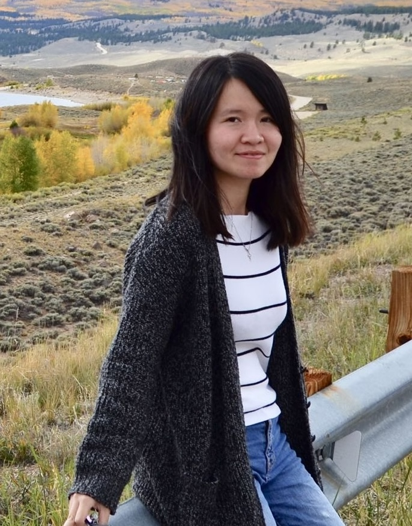

Currently, I am a Senior ML Engineer at the Allen Institute for AI (Ai2), working on building AI models and systems from research to real-world deployment. Previously, I was a Research Scientist at Google X and Mineral.ai, where I developed production ML models for crop yield forecasting and conducted research on multimodal models and LLMs. Earlier, I was an AI Resident at Google X, working on object detection and model quantization.
I graduated with a Ph.D. in Computer Science from the University of Colorado Boulder (advisor: Qin Lv), where I worked closely with domain scientists, including atmospheric, fisheries, and seismology experts from organizations such as CIRES, NOAA, and LLNL, to develop ML models for real-world scientific problems.
Outside of work, I enjoy hiking, swimming, and exploring new foods and recipes.
MAR 2026 • Our tutorial "Getting Started with OlmoEarth: From Embeddings to Fine-tuning" has been accepted at the ICLR 2026 Workshop on Machine Learning for Remote Sensing!
FEB 2026 • Our paper OlmoEarth: Stable Latent Image Modeling for Multimodal Earth Observation has been accepted at CVPR 2026. See you in Denver! 🏔️
DEC 2025 • Gave a talk "OlmoEarth: From Foundation Model Research to an End-to-End EO Platform" at the CS4Env seminar at the University of Washington.
NOV 2025 • We released OlmoEarth! 🌍 [Ai2 Blog] [Paper] [Code] [Platform]
JUL 2025 • Two papers accepted at ICML 2025. See you in Vancouver, Canada! 🍁
JUN 2025 • Invited Simon Ilyushchenko from Google to present his work on Earth Agents at our Environmental AI Seminar.
MAY 2025 • Presented "Full Lifecycle of EO-based AI Foundation Models: Lessons Learned from Real-World Deployment" at the first ESA-NASA International Workshop on AI Foundation Model for EO.
MAY 2025 • The Landsat vessel detection model has been successfully deployed in Skylight (now public! 🎉), and added to the paper Satellite Imagery and AI: A New Era in Ocean Conservation, from Research to Deployment and Impact (Version. 2.0).
APR 2025 • Two US patents published (filed while I was at Mineral.ai, technology later acquired by John Deere):
MAR 2025 • Our paper Atlantes: A System of GPS Transformers for Global-Scale Real-Time Maritime Intelligence has been accepted at ICLR 2025 Workshop: Tackling Climate Change with Machine Learning. [Ai2 Blog]
JAN 2025 • Our paper MoLA: MoE LoRA with Layer-wise Expert Allocation has been accepted at NAACL 2025.
OCT 2024 • Serving on the AI Advisory Committee for the NSF Cyberinfrastructure project on AI for sonar data (led by Carrie Bell and Qin Lv).
AUG 2024 • Joining Ai2 as a Senior ML Engineer.
MAR 2024 • Our paper IM-RAG: Multi-Round Retrieval-Augmented Generation Through Learning Inner Monologues has been accepted at SIGIR 2024.
JAN 2024 • Our paper Evaluation and Enhancement of Semantic Grounding in Large Vision-Language Models has been accepted at AAAI 2024 Workshop on Responsible Language Models.
DEC 2023 • Our paper Tackling Vision Language Tasks through Learning Inner Monologues has been accepted at AAAI 2024.
OCT 2023 • Two papers accepted at NeurIPS 2023:
JAN 2023 • Mineral.ai is leaving Google X to become a new Alphabet company! Excited to work on developing novel learning platform and AI models for agriculture.
MAY 2022 • Joining Google X, the Moonshot Factory as a Research Scientist.